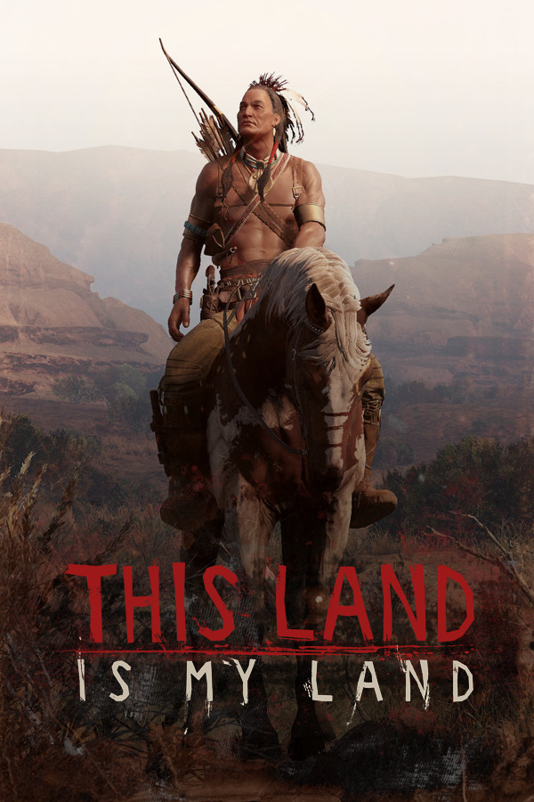

This Land Is My Land
This Land Is My Land
Details
|  | |
| Playtime | Not Played |
| Last Activity | Never |
| Added | 4/16/2022 10:07:50 |
| Modified | 5/3/2022 21:03:53 |
| Completion Status | $Check Out |
| Library | Playnite |
| Source | Wanderer |
| Platform | PC (Windows) |
| Release Date | 10/20/2021 |
| Community Score | 73 |
| Critic Score | |
| User Score | |
| Genre | RPG Simulator |
| Developer | Game-Labs |
| Publisher | Game-Labs |
| Feature | Partial Controller Support Single Player |
| Links | Community Hub Discussions Guides News Store Page PCGamingWiki |
| Tag | [EMT] Logo Missing |
Description
THIS LAND IS MY LAND HAS EXTREMELY STEEP LEARNING CURVE

Take your trusty bow, fast mustang, and take back your lands. Engage with roaming patrols, sneak into forts and settlements, explore the beautiful world, craft weapons, and consumables, hunt animals, lead your loyal companions to victory!
This Land Is My Land brings you a unique blend of stealth-action and strategy mechanics, allowing you to choose numerous approaches to every problem or threat your tribe will meet on the long path to taking back your land.
WORLD

Explore a never-same 100 sq mi world spread across three unique biomes filled with valuable resources, dangerous animals to hunt, and a number of other tribes wishing to join your resistance.
Encounter hundreds of enemy settlements with thousands of enemy settlers in them, fight roaming patrols, prevent cities from developing, blow up railways, and do everything you find reasonable, to stop the opposing forces from spreading across your rightful land.
Manage and develop your camps, send your warriors to attack, give the orders to craft, create new settlements, and set up semi-autonomous infrastructure which will fight against settlers, without taking time from your deadly business.
Experience Realistic Needs - treat diseases caused by not-so-wisely chosen food eaten in the heat of combat or dirty water drunk from the river or have the option to turn this system off if it doesn’t fit your play style.
Find a good use for a Resistance Creation that allows you to customize your next resistance in how you want it to be played.
STEALTH

Find good uses for a broad set of lethal and non-lethal stealth tools, use baits to attract carnivores to enemy camps, poison enemy food, and craft traps…
Use the environment to hide the aftermath of your infiltration, or use it as a good observation point to plan your future move in an enemy settlement.
Make a decision - let them run away scared to death spreading the word about your bravery and kindness, or kill on sight; both choices have their consequences.
Feel the life-like AI perception system that includes eyes and ears and mouth to communicate with others, memory to understand usual player behavior, and awareness that allows them to feel the disturbance around them.
ACTION

Create your own favorite list of weapons from a vast set of Bows, Flintlocks, Rifles, Repeaters, Optics, and more. Don’t forget to take into account realistic ballistics.
Fight against smart combat AI which tries to fight against you collectively, using its surroundings and weapon perks.
Enable Realistic Damage in your resistance to experience another level of difficulty and immersion, by enabling bleeds, fractures, infections, shocks, and more. This system applies to you and your enemies.
Create a trustworthy War Parties, a directly controlled group of warriors that travel and fight alongside you.
STRATEGY

Use strategy view at any time to take a quick break from combat, or to react to emergencies far from your current location.
Prepare for upcoming events by giving different orders to your camp warriors.
Outperform Global AI, which plays its strategy game to beat you in the race of capturing the regions of your world. Block all its attempts to dominate in this world by breaking his resource gatherings, train developments, and city evolvement.
SOCIAL/ONLINE

Trade using your valuables stored in the social stash, via the global player-to-player auction.
Compete against other players in the Leaderboards.
Complete a variety of events with valuable rewards.
Find a good use for a friendly in-game chat.
Use the mail system to send items to other players and between your resistances.
Here is the roadmap for the upcoming features:
Take your trusty bow, fast mustang, and take back your lands. Engage with roaming patrols, sneak into forts and settlements, explore the beautiful world, craft weapons, and consumables, hunt animals, lead your loyal companions to victory!
This Land Is My Land brings you a unique blend of stealth-action and strategy mechanics, allowing you to choose numerous approaches to every problem or threat your tribe will meet on the long path to taking back your land.
WORLD
Explore a never-same 100 sq mi world spread across three unique biomes filled with valuable resources, dangerous animals to hunt, and a number of other tribes wishing to join your resistance.
Encounter hundreds of enemy settlements with thousands of enemy settlers in them, fight roaming patrols, prevent cities from developing, blow up railways, and do everything you find reasonable, to stop the opposing forces from spreading across your rightful land.
Manage and develop your camps, send your warriors to attack, give the orders to craft, create new settlements, and set up semi-autonomous infrastructure which will fight against settlers, without taking time from your deadly business.
Experience Realistic Needs - treat diseases caused by not-so-wisely chosen food eaten in the heat of combat or dirty water drunk from the river or have the option to turn this system off if it doesn’t fit your play style.
Find a good use for a Resistance Creation that allows you to customize your next resistance in how you want it to be played.
STEALTH
Find good uses for a broad set of lethal and non-lethal stealth tools, use baits to attract carnivores to enemy camps, poison enemy food, and craft traps…
Use the environment to hide the aftermath of your infiltration, or use it as a good observation point to plan your future move in an enemy settlement.
Make a decision - let them run away scared to death spreading the word about your bravery and kindness, or kill on sight; both choices have their consequences.
Feel the life-like AI perception system that includes eyes and ears and mouth to communicate with others, memory to understand usual player behavior, and awareness that allows them to feel the disturbance around them.
ACTION
Create your own favorite list of weapons from a vast set of Bows, Flintlocks, Rifles, Repeaters, Optics, and more. Don’t forget to take into account realistic ballistics.
Fight against smart combat AI which tries to fight against you collectively, using its surroundings and weapon perks.
Enable Realistic Damage in your resistance to experience another level of difficulty and immersion, by enabling bleeds, fractures, infections, shocks, and more. This system applies to you and your enemies.
Create a trustworthy War Parties, a directly controlled group of warriors that travel and fight alongside you.
STRATEGY
Use strategy view at any time to take a quick break from combat, or to react to emergencies far from your current location.
Prepare for upcoming events by giving different orders to your camp warriors.
Outperform Global AI, which plays its strategy game to beat you in the race of capturing the regions of your world. Block all its attempts to dominate in this world by breaking his resource gatherings, train developments, and city evolvement.
SOCIAL/ONLINE
Trade using your valuables stored in the social stash, via the global player-to-player auction.
Compete against other players in the Leaderboards.
Complete a variety of events with valuable rewards.
Find a good use for a friendly in-game chat.
Use the mail system to send items to other players and between your resistances.
ROADMAP
Even though This Land Is My Land is reaching version 1.0 release, it doesn’t mean that the game’s development is finished!Here is the roadmap for the upcoming features:
- Base Building.
- Global quests.
- New events.
- SOCIAL-based player-to-player assistance.